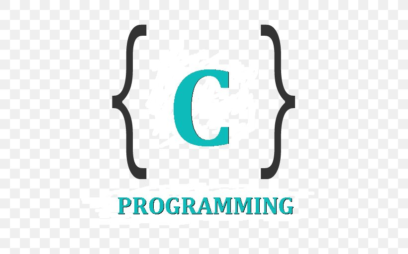

C Programming Practice (EECS201)
Lecture Overview
|  | All things around us will be programmable with Embedded Software. C Programming Language is widely used to program the hardware-intensive embedded systems in electronics engineering field. The main objective of this course is to learn to program software in C programming language, especially in electrical and electronics engineering field. The practical problem solving methods are covered through the entire course. |
 Prof. Daejin Park introduces basic fundamentals for the given lectures during 1 hour, then practice items by examples will be given. Mr. Dongkyu Lee will explain the experiment in details. Mr. Kwon and Mr. Kang are ready to assist the students during lab time. Students can ask any questions to these lecture assistants (TAs) directly or through lms web site.
Prof. Daejin Park introduces basic fundamentals for the given lectures during 1 hour, then practice items by examples will be given. Mr. Dongkyu Lee will explain the experiment in details. Mr. Kwon and Mr. Kang are ready to assist the students during lab time. Students can ask any questions to these lecture assistants (TAs) directly or through lms web site.
Assignments
This lecture is experiment class. We cover only small parts of boring theory. Everything you have to do is to write your codes by yourself. All students have to do the programming problems themselves within 3 hours. The every on-the-live test will be given during the lecture.
Grading Criteria
Mid test 25%, final test 35% are evaluated by on-site programming and demonstration method. The lab during the every lecture is evaluated everyone, for 20% credit. The report is also given for 20% record. 5%record will be evaluated regarding to the safety preliminary class.
Lecture Timeline
The following is a brief time schedule during one semester. Please contact us to get the detailed lecture information including lecture slides. The registered students can get the lecture slides from KNU lecture management systems (lms).
Introduction to Lecture
C Language Overview
Variable, Data Type
Skeleton of C Program
Operators
Conditional Branch, Loop
Functions
Pointers
Arrays
Struct and Union
File I/O
Project - Intersection (Cross-Points)
Project - Integration (Measure Area)
Project - Differentiation (Min/Max Search)
Project - Monte Carlo Simulation (Circle Area)
Project - Trajectory (Line Trace)
Project - Differential Equation (Coffee Temperature)
Project - Harmonics (Fourier Transform)
Project - Filters (Signal Processing)
Project - COVID-19 Simulation